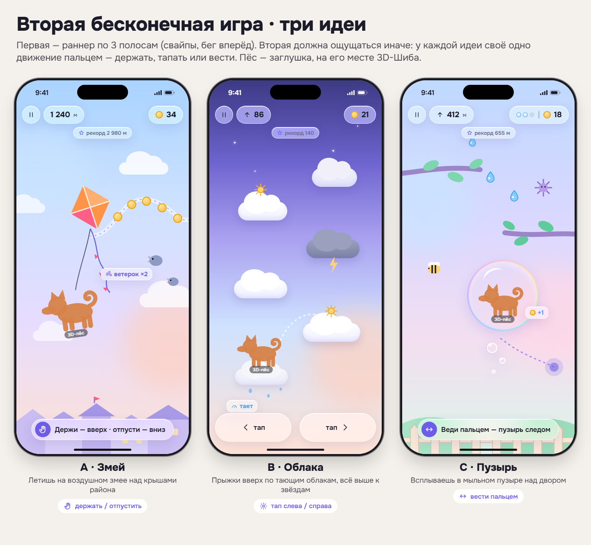
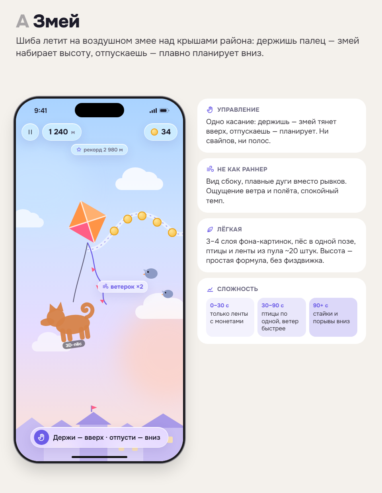
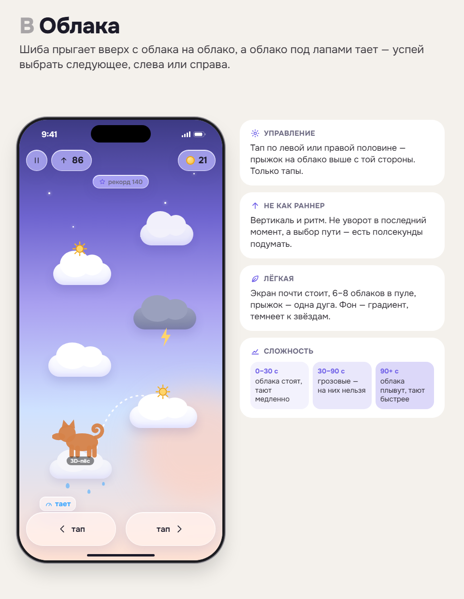
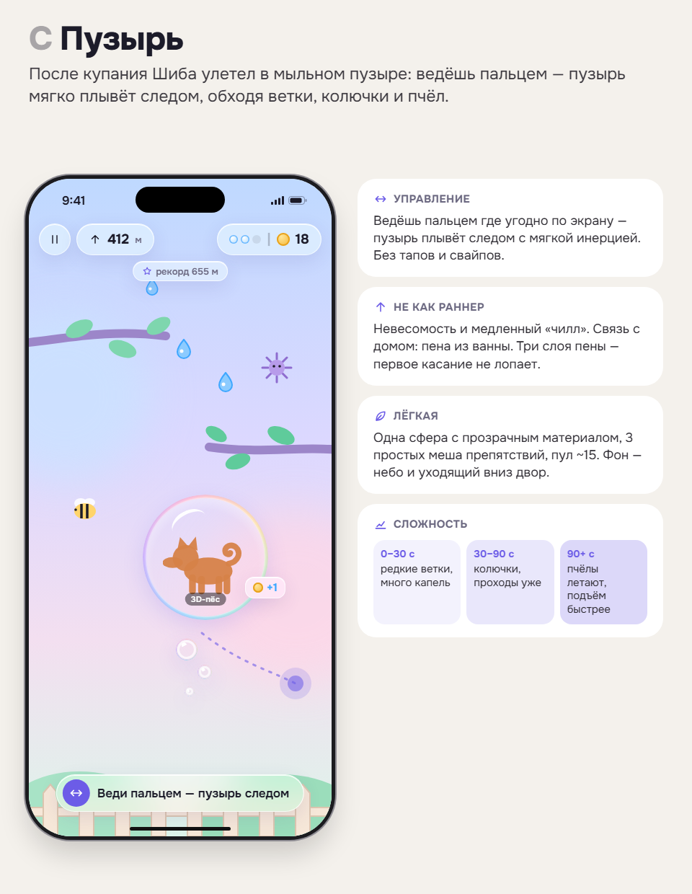

Две задачи без кода: что взять из «Аватарии» для общения с друзьями и какой быть второй бесконечной игре. Выбрать по одному пункту в каждой — или сказать «не то».
Всё асинхронно, круг — 2–3 друга, без чата и свободного текста. Сервер, где нужен, — облачный воркер на аккаунте «Блок Дуо». Полная версия с источниками — research.md.
| Механика | Как выглядит у нас | Сервер | Размер | Риск | |
|---|---|---|---|---|---|
| 1 | Открытка из дома | кнопка «Поделиться» у открытки дня и в Шкафу — картинка пса и комнаты в любой мессенджер | нет | S | почти нет |
| 2 | Друзья по коду + гостинец | друг добавляется кодом/QR; раз в день значок-подарок без текста, прилетает в островок | воркер | M | спам → лимит 1/день |
| 3 | Пёс в гостях | Шиба уходит к другу на 1–3 ч, у друга в комнате второй пёс, погладить — обоим +любовь | воркер | M | FPS с двумя псами |
| 4 | Рекорды друзей | на карточке игры «Лиса — 1 240 ★», только среди друзей | воркер | S | мягкий анти-чит |
| 5 | Дружба псов | кольцо дружбы растёт от гостинцев и визитов, на 3/5/10 — парная вещь | воркер | M | не давить серией |
| 6 | Помочь другу | полить растение в комнате друга → его двор +5 % на сутки | воркер | M–L | просмотр чужой комнаты |
| 7 | День рождения пса | друзьям приглашение, кто зашёл — общий значок и колпак | воркер | M | редкое событие |
Не берём: чат, свадьбы и поцелуи, глобальные рейтинги и голосования, обмен вещами, покупки за деньги. В облаке только имя пса, внешность и игровые числа.
У каждой идеи своё одно движение пальцем — не как раннер со свайпами. Макеты: games.html (A · B · C).


A · Змей — рекомендуюдержать / отпустить. Самый спокойный и самый непохожий на раннер, управление проще некуда.

B · Облакатап слева / справа. Ритм и выбор пути вверх; азартнее, но ближе к «прыгалкам».

C · Пузырьвести пальцем. Уютная связка с купанием, но нужен красивый прозрачный пузырь в 3D.
Волна 60 · 31.10.2026 · только дизайн и исследование, кода приложения нет.